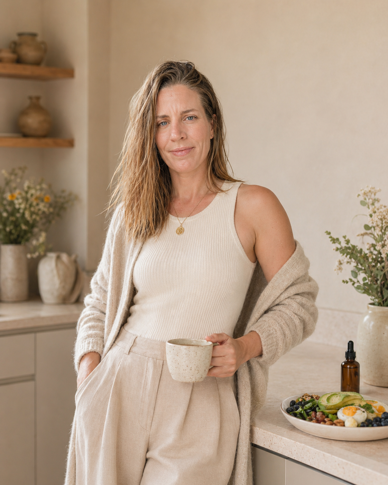
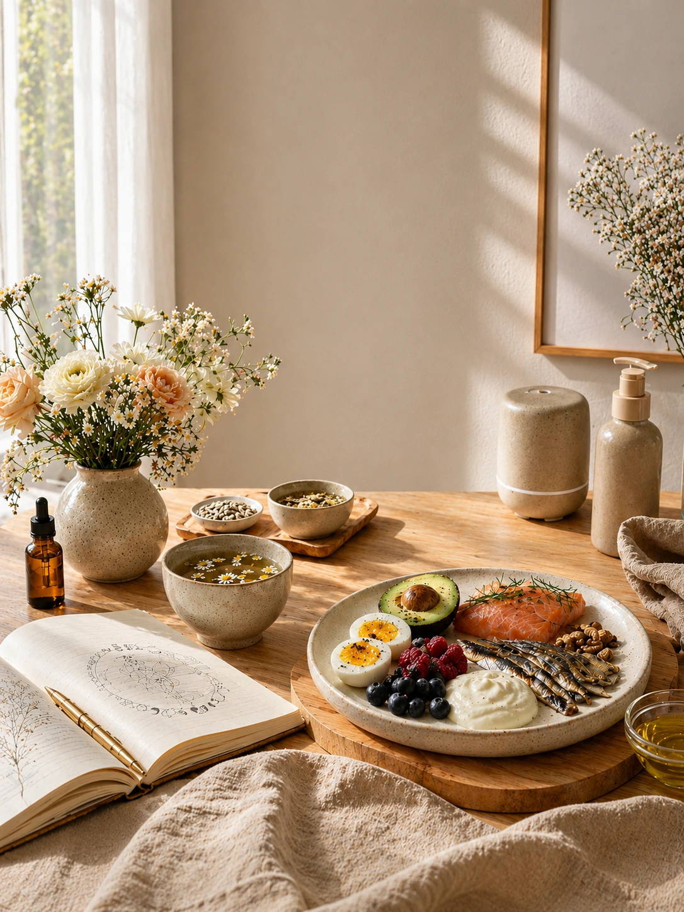
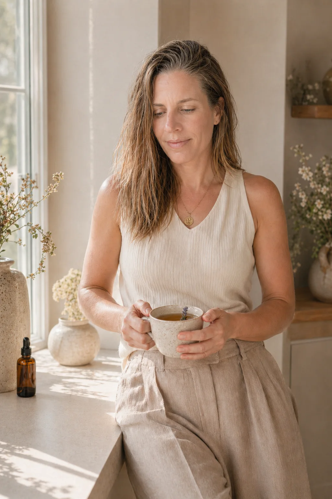
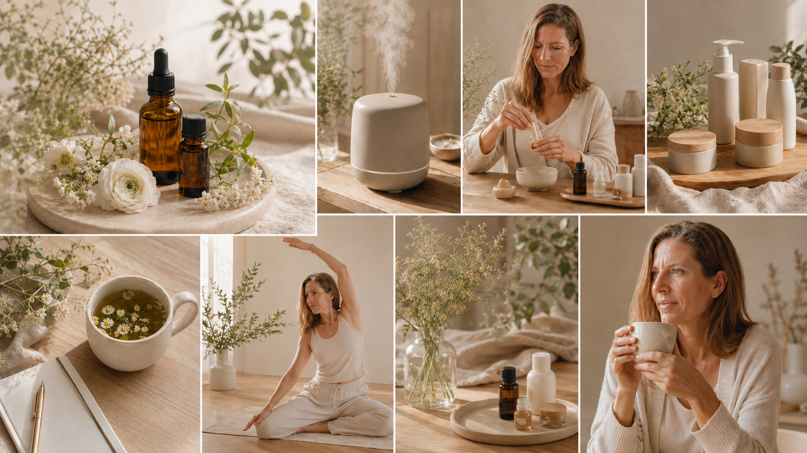

Primero entendemos
Leemos tu caso como un mapa completo: cuerpo, hábitos, energía, emoción y entorno.
Nutrición femenina integrativa
Para mujeres con digestión pesada, inflamación, cansancio o desajustes hormonales que quieren entender qué les pasa sin empezar otra dieta ni cargar con otra exigencia más.

Cuando el cuerpo cambia
Eso que notas no significa que tu cuerpo vaya contra ti. Muchas veces es la forma que tiene de pedir seguridad, coherencia y una mirada más completa.
No necesitas otra dieta
Leemos tu caso como un mapa completo: cuerpo, hábitos, energía, emoción y entorno.
Priorizamos menos cosas, pero con más sentido. Lo que puedas sostener en tu vida real.
Ajusto el proceso para que no dependa de hacerlo perfecto ni de tener una vida ideal.

Esto puede ayudarte si
El valor del proceso no está en darte más información, sino en convertir tus señales en una hoja de ruta clara, realista y acompañada.
Dejas de saltar entre consejos, dietas, suplementos o rutinas sin saber qué prioridad atender primero.
Ordenamos síntomas y contexto para que lo que sientes deje de parecer un conjunto de señales sueltas.
Sales con un camino concreto para trabajar digestión, inflamación, energía, ciclo, descanso y hábitos.
Priorizamos pocos cambios con sentido para que puedas sostenerlos en tu vida real.
Reviso cuándo tiene sentido usar herramientas low tox, suplementación o biomarcadores, y cuándo no.
El objetivo es que vuelvas a entender tu cuerpo sin sentir que tienes que controlarlo todo.

Cómo trabajo
Trabajo el cuerpo como un todo: nutrición, entorno, señales internas y herramientas naturales elegidas con criterio. No se trata de hacerlo todo, sino de saber qué puede ayudarte de verdad en este momento.
Vengo de conocer un cuerpo inflamado, cansado y difícil de habitar. Por eso mi acompañamiento busca quitar ruido, ordenar prioridades y construir una forma de cuidarte que puedas sostener.
Empezar a ordenar mi casoHerramientas integrativas y low tox
En mi enfoque pueden aparecer recursos como cosmética fresca, aceites esenciales, suplementación o medición de biomarcadores, siempre con criterio y según el momento de cada mujer.
No son el centro del proceso ni sustituyen una estrategia. Son herramientas que pueden acompañar cuando tienen sentido, dentro de una mirada más completa del cuerpo, el entorno y la vida real.
Quiero conocer herramientas low tox
Cuidado corporal y facial más coherente con una vida low tox.
Rituales sencillos de apoyo al descanso, calma y autocuidado.
Solo cuando aporta sentido a la estrategia, no como acumulación.
Datos que pueden ayudar a mirar el caso con más precisión.
Servicios de acompañamiento
Una propuesta flexible para entender qué está sosteniendo tus síntomas, ordenar prioridades y ajustar tu alimentación y hábitos sin obligarte a cerrar un programa de varios meses desde el inicio.
El primer mes funciona como punto de partida: miro tu caso con calma, creo una primera pauta personalizada y reviso cómo responde tu cuerpo antes de decidir los siguientes pasos.
Si aún no estás lista
Recibe una guía breve para mirar tus señales con más coherencia y elegir tu siguiente paso: observarte mejor, reservar claridad, pedir una valoración o iniciar un proceso acompañado.
Idea central
“No necesitas hacerlo todo. Necesitas saber qué tiene sentido para tu cuerpo ahora.”— Mónica Luque
Primer paso
En 15 minutos vemos qué te preocupa, si puedo ayudarte y cuál sería el siguiente paso más coherente para tu caso.
Empezar con claridad